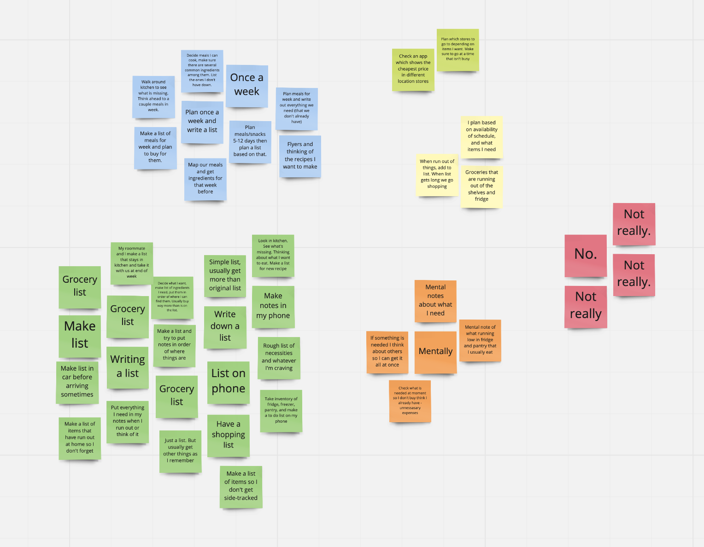
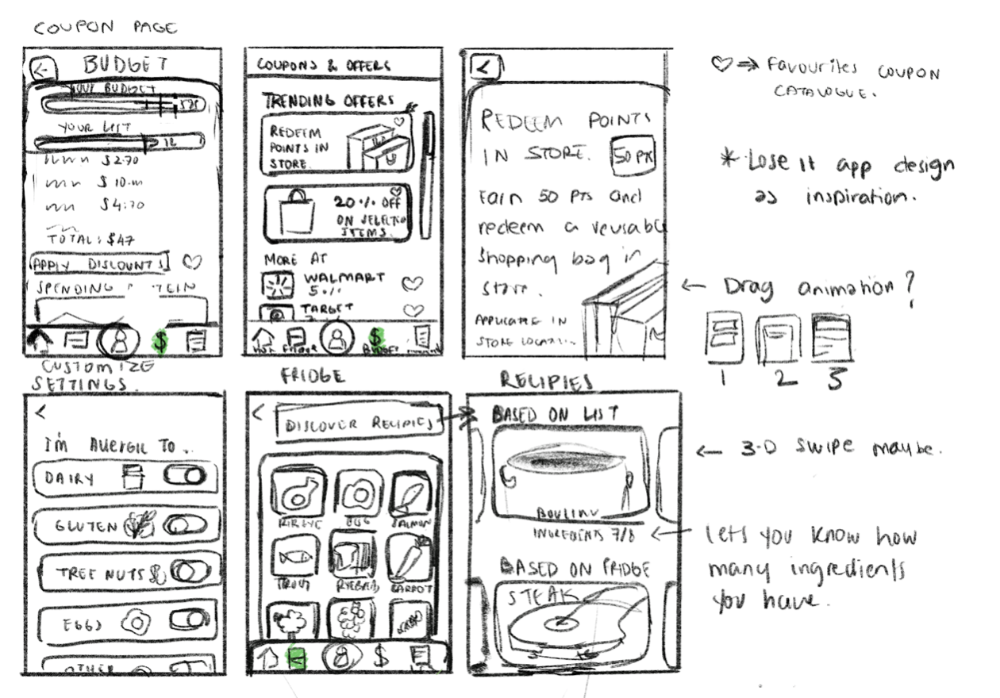
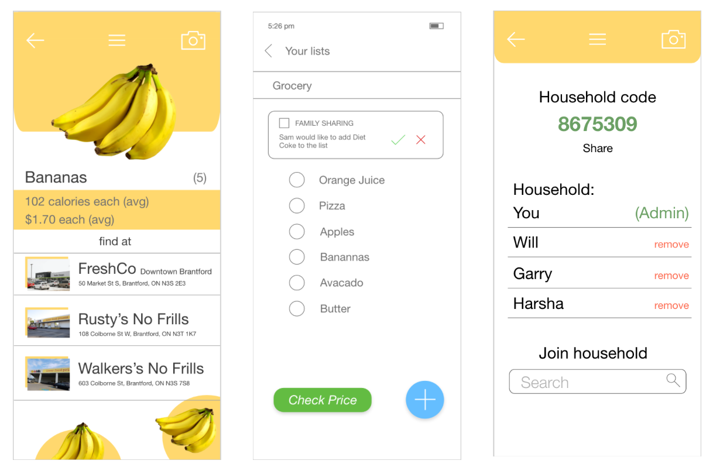
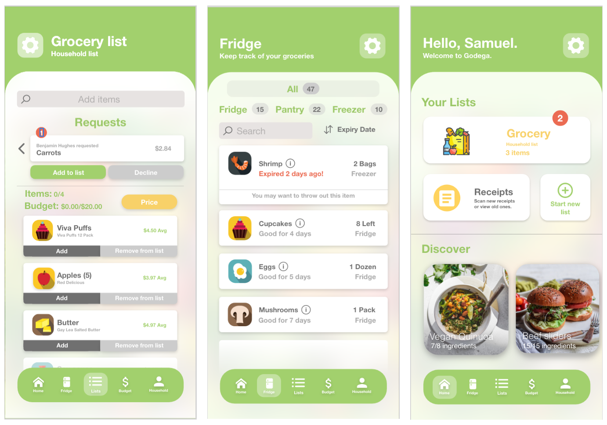
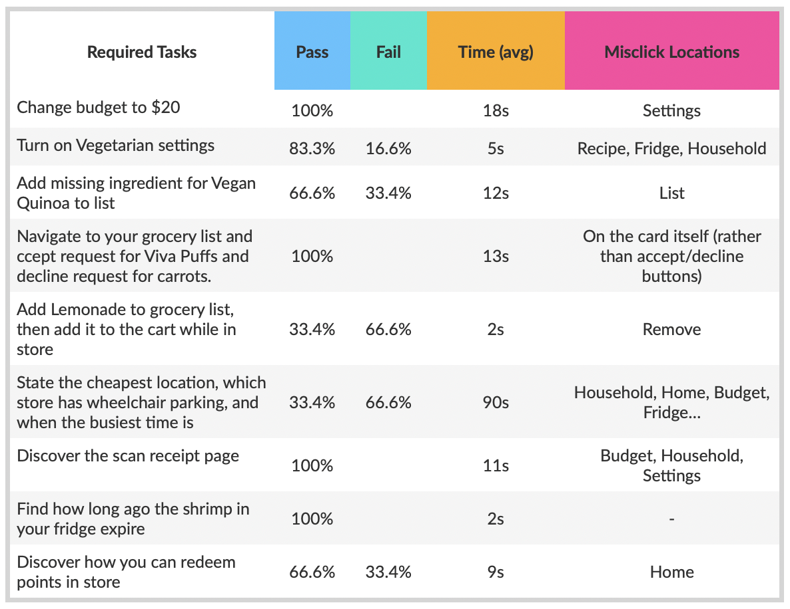

Seamless Grocery Shopping
with Godega
Godega is a grocery shopping powerhouse, turning the everyday chore into a seamless and enjoyable experience. It allows users to create lists with their household, keep track of items, and save money.
December, 2020 | 10 min read
Project Framing
Grocery shopping is an essential part of many people’s lives, and yet it is generally regarded as an unenjoyable experience; a pleasureless chore that takes up time and effort from other activities. Many companies have sought to act in response to this, and have created online shops where users can "shop for groceries" on their couch, and have them delivered right to their home. However, our research has shown that for a variety of reasons, most people still prefer to shop in store, leading us to ponder the important question:
“How might we re-define the grocery shopping process in order to save people time and money, while ultimately turning the negative emotions associated with it into an enjoyable and pleasurable experience?”
Approach
Our original idea was an app that helped alleviate the pain of grocery shopping in some way, and some quick online research (backed by personal experience) immediately confirmed that most people found grocery shopping to be a bothersome chore. We began by brainstorming possible solutions in the form of a mobile app (the project description provided required the solution be in the form of some mobile or web interface). Our initial ideas revolved around saving time, money, and effort, and before getting to deep into the consideration of ideas, we knew we needed some solid user research to go from.
User Research/Research Phase
Due to the COVID-19 Pandemic, we were fairly limited in the way in which we could run user studies. Looking back on the project, I would have preferred to have been able to run user interviews and focus groups, in order to promote further conversation and insights. Because of these restrictions, and after a run-through of the idea by the Professor (thanks Umair!), we decided to do some online research, and then run an online survey. This survey allowed us to quickly gather information from a large amount of people in a short amount of time - and we made sure our questions were open-ended and allowed for the greatest amount of insights from our user base.
As a group we decided that our user base fit the range anywhere between 16-50, as anyone older would have a fairly limited knowledge using mobile interfaces, and anyone younger wouldn't be too likely to grocery shop on a frequent basis. Of roughly 50 responses to the survey, 95% of these fit within our determined age category. Below are some sample questions that were asked.
Sample
Question
What factors *heavily* influence your purchasing decisions?
Sample
Question
What frustrations do you experience throughout the process?
Sample
Question
Do you plan your shopping trip beforehand? How do you go about planning? Are there things that would make this process easier?
The results of the survey were certainly encouraging, and provided us with a great place to start. Taking the responses from each of the 11 questions, we created an online whiteboard using Miro in order to synthesize our findings. The image below shows the findings of the question “how do you plan for your shopping trip beforehand?” The majority of answers showed that most people choose to either write or type out a grocery list, and that many plan their meals for the week in advance, and make a list of the required ingredients. Further findings from the survey will be briefly discussed in the requirements section.
Following the survey, we also conducted unstructured interviews (where only a couple introductory questions were asked, in order to lead into natural conversation), as well as contextual inquiry. By observing parents plan, execute, and reflect on their grocery shopping experience, we were able to gather some key findings.
Key Findings
1. Multi-person shopping
There is a great deal of confusion when multiple people set out to plan and execute the shopping trip.
2. Fatigue
Near the end of the shopping trip, a great sense of fatigue kicks in, in which users wish the whole experience was over.
3. Lack of awareness
We found that many shoppers were unaware of which food items they currently owned. This often led to multiple of the same product being purchased.
4. Under-preparation
Shoppers assume they are prepared for shopping, and yet when they enter the store they wish they had thought a bit more about what they needed and what they didnt.
5. Loyalty
Price, location, time, and convenience will all affect which store is visited.
6. Time
The less time spent grocery shopping, the better. This is generally viewed as a chore that should be finished as fast as possible.
We further went on to create a User Journey Map and Personas. These essential pieces ensured that we were able to keep our focus on the user's needs throughout the duration of the project, rather than revert to our own personal bias. Our main ideas for meeting the user's needs are listed below, as well as under the "Opportunities" section of the journey map.
Group
Shopping
Shared Household list that allows all members to request list items. Admin accepts or declines.
Save Time
and Money
Store locator provides busiest times, so users know which times to avoid, and also shows the average price of your list as the closest stores, allowing the user to choose the cheapest or most suitable option.
Reduce
Fatigue
Subtle rewards and reassurance provide boost of positivity at the end of the shopping trip.
Stay
Organized
Virtual "fridge" scans receipt and automatically adds items to fridge. Allows users to see which items are in their fridge, and which are about to expire.
Plan Meals
Recipe suggestions provide options based on what's in your fridge, as well as suggesting new items. Ingredients that aren't owned can be quickly and easily added to the grocery list.
Write Lists
A simple and intuitive list creator allows users to easily keep track of what's in their cart, and what they still need.


Prototype Phase
Feeling that we now had a solid foundation from which to base our design project, we jumped from the research phase into prototyping. We had a good idea of where we needed to go, and how we could help our end user. Based upon the opportunities and issues mentioned above, we created some initial drawings on paper, as well as some prototypes in Adobe XD, trying to maintain the items of need as expressed by our research. Incorporating the ideas of Color Perception Theory, we wanted to use green as the primary colour of our app because it represents good food, health and fresh fruits and vegetables. It also represents prosperity and wealth and so makes a good identity colour for our app. Along with that we considered yellow and red to support.
 With these initial prototypes done, we moved on to create a more coherent prototype that we would be able to test with our users. Using Adobe XD, we created a prototype with all the necessary features in order to test the usability of each one. Below are some screenshots of the prototype, displaying some of the key features, including the shopping list, fridge tracker, and navigation page. Other features included dietary settings (to promote accessibility), price checking at several different stores, and a receipt scanner to automatically add purchased list items to the fridge.
User Testing
From there we moved on to the testing phase. It was imperative that the design be easy and intuitive to use. In order to test out design, we decided to utilize usability testing, along with the think-aloud technique. By getting our users to think out loud as they performed the tasks we had assigned, we were able to gain some key insights into their initial thoughts about the app, and how it worked while navigating through it.
Our usability testing included 6 participants. We asked each to sit down with our app, and perform approximately 9 tasks. Each participant was given either a pass or fail for each task, and was timed.
From these tests we were able to gain a number of key insights. For instance, many of the users found the home page was fairly confusing - there was too much information to process, which led to a slow level of processing. Most also found it difficult or impossible to find the location with the cheapest price. We further noticed that there was a lot of confusion around the difference between adding an item to the list, and adding it to the cart. Not only was there far too many options visible, but the wording threw most off, leaving them to assume the item was already in their cart when in fact it wasn't.
On another note, several of the tasks were completed with no trouble. Users were quickly and easily able to change their dietary settings, add lemonade to the grocery list, and figure out the expiry dates in the fridge.
Iteration
We took the results from these tests, and discussed how we might iterate our prototype to better suit the users needs. We left the features that worked well alone, and focused on those that needed a higher degree of usability. Below are some revised sketches, outlining the key changes to make based on user feedback.


My Angle
One of first questions we asked ourselves when coming up with the app idea was whether or not the app would suit people's needs. We figured that if most people prefer to shop online rather than in store, than a grocery list app that supports in-store shopping would not be particularly useful. What we found after a little internet research, however, was that most grocery shoppers would prefer to shop in store rather than from home (see academic article below). As described in the article, the reasoning for the in-store preference is that not only do people distrust online shopping, but they prefer to buy things which they can choose themselves. This is especially important to people (and we found this in our research) when it comes to buying produce. Customers are far more likely to buy produce in store as it allows them to choose the best/freshest foods.
References
Aziz, N. N. A., & Wahid, N. A. (2018). Why Consumers are Hesitant to Shop Online: The Major Concerns towards Online Shopping. International Journal of Academic Research in Business and Social Sciences, 8(9), 1175–1185.